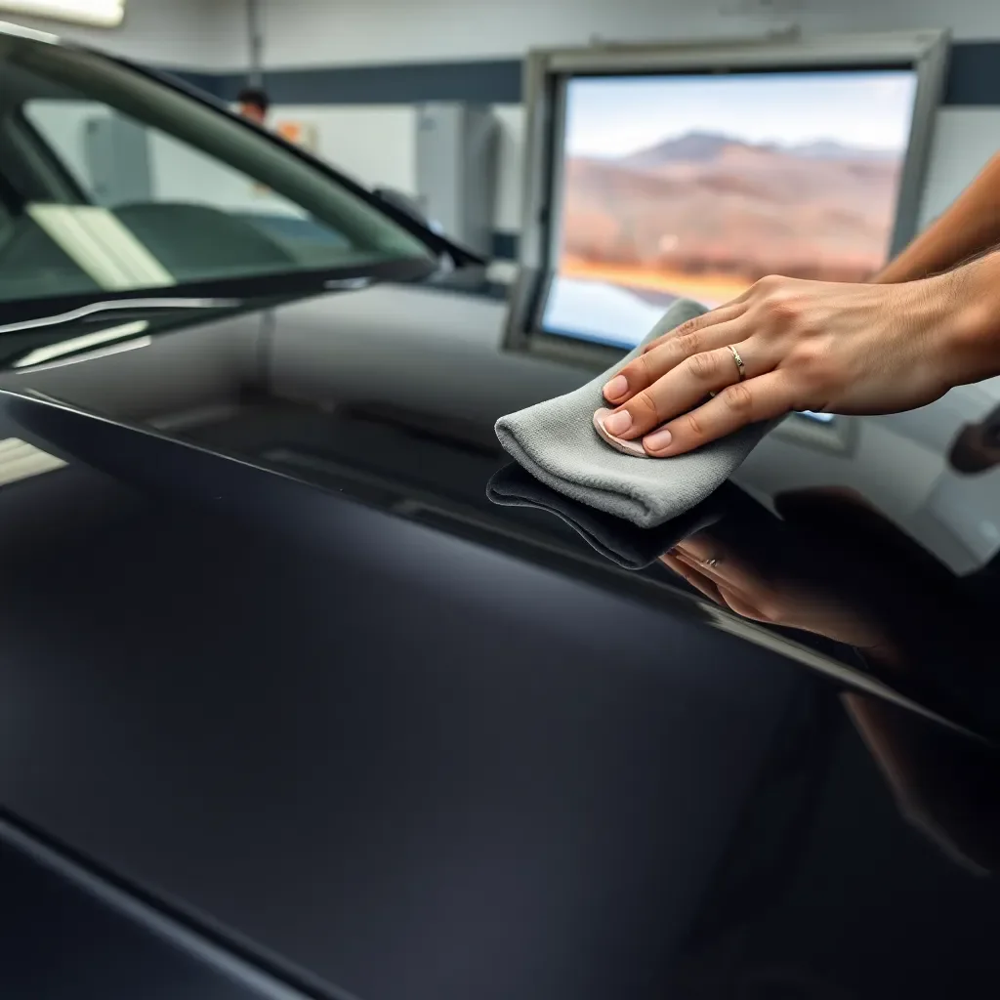

Ceramic Coating in Chattanooga, TN
The most advanced paint protection available — a semi-permanent glass-hard layer that protects your finish from UV, pollen, contaminants, and water for 2–5+ years.

What Is Ceramic Coating?
Ceramic coating is a liquid polymer applied to a vehicle's paint surface that chemically bonds to the clear coat, creating a semi-permanent protective layer. Unlike wax or paint sealant — which sit on top of paint and degrade within weeks to a few months — ceramic coating bonds at the molecular level and can last 2 to 9 years depending on the grade applied.
The result is a hydrophobic (water-repelling) surface with exceptional gloss, dramatically easier maintenance, protection from UV oxidation, and resistance to chemical contamination. Water and dirt sheet off rather than bonding to the surface — a properly coated car practically cleans itself in rain.
Why Ceramic Coating Makes Sense in Chattanooga
Chattanooga's climate is particularly hard on paint. The Tennessee Valley sees one of the heaviest pollen seasons in the Southeast — oak, pine, and hickory pollen blanket vehicles for months. Industrial fallout and railroad brake dust from the city's rail freight activity embed iron particles in paint that cause rust spots. UV intensity at Tennessee's latitude fades and oxidizes clear coats within a few years without protection. And bird droppings and tree sap — Chattanooga has both in abundance — are among the most chemically destructive contaminants for unprotected paint.
Ceramic coating doesn't just make your car look better — it creates a chemically resistant shield that keeps all of this from permanently damaging your paint.
Benefits of Professional Ceramic Coating
- Hydrophobic surface: Water beads and sheets off, carrying dirt with it. Maintenance washing takes half the time.
- UV protection: Blocks UV oxidation that fades and dulls clear coats over time.
- Chemical resistance: Resists bird droppings, tree sap, industrial fallout, and road chemicals that etch unprotected paint.
- Enhanced gloss: The coating amplifies depth and clarity in your paint — the car looks like it just left a showroom.
- Longevity: Professional coatings last 2–9 years vs. wax (1–3 months) or sealant (6–12 months).
- Swirl resistance: The coating's hardness (rated 9H on the pencil scale) makes the surface more resistant to fine scratches from routine washing.
Ceramic Coating Pricing in Chattanooga
- Entry-level coating (2–3 year): $500–$800
- Mid-tier coating (4–5 year): $800–$1,400
- Premium long-term coating (7–9 year): $1,400–$2,000+
All pricing includes mandatory pre-coating paint correction. A ceramic coating installed over contaminated or scratched paint locks those defects in permanently — we don't skip this step.
Frequently Asked Questions
How long does ceramic coating last in Tennessee?
Professional coatings last 2–9 years depending on product tier and maintenance. Entry-level coatings last 2–3 years; mid-tier 4–5 years; premium coatings 7–9 years. In Tennessee's climate of UV, pollen, and industrial fallout, ceramic coating provides meaningfully better protection than wax or sealant.
How much does ceramic coating cost in Chattanooga?
Ceramic coating in Chattanooga costs $500–$2,000 for most vehicles. Entry-level runs $500–$800; mid-tier $800–$1,400; premium $1,400–$2,000+. All pricing includes paint correction before application.
Does my car need paint correction before ceramic coating?
Yes — always. Ceramic coating locks in whatever is on your paint when applied. Swirls, scratches, or oxidation get sealed in permanently under the coating. Professional installers always perform at minimum a single-stage correction before any coating. Anyone quoting coating without correction is not doing the job correctly.
Get a Ceramic Coating Quote for Your Vehicle
We'll assess your paint condition and recommend the right coating package for your vehicle and budget.